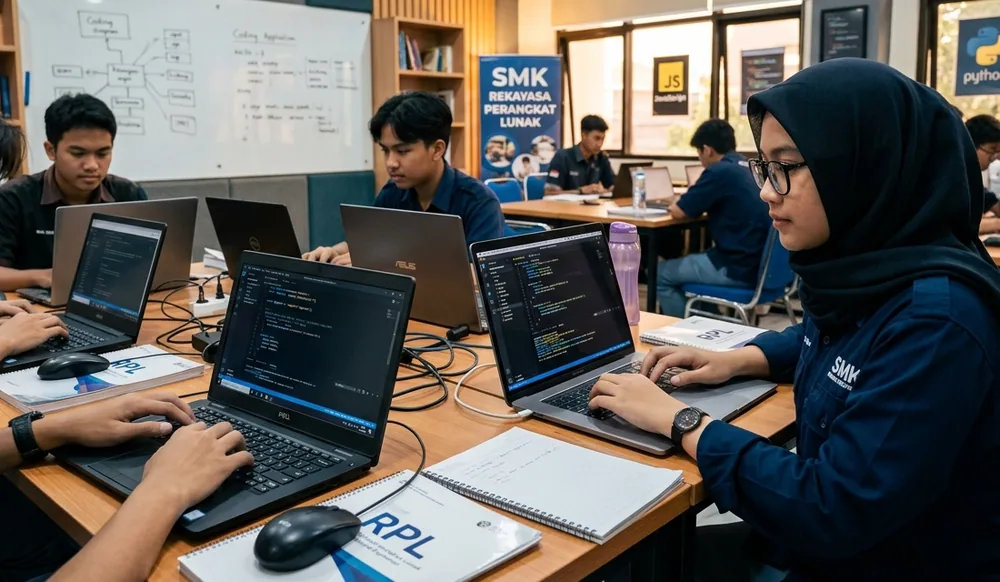

Memasuki lingkungan kerja magang atau Praktik Kerja Lapangan (PKL) untuk pertama kalinya sering kali mendatangkan perasaan yang bercampur aduk antara antusiasme dan rasa cemas. Di satu sisi, kamu bersemangat karena akan menerapkan teori sekolah atau kuliah ke dalam dunia industri nyata. Namun di sisi lain, bayangan akan ritme kerja yang cepat, penggunaan tools yang asing, serta ekspektasi dari pembimbing lapangan bisa membuat pemula merasa kewalahan.
Dunia kerja digital memiliki dinamika yang sangat fleksibel namun berpatokan ketat pada tenggat waktu (deadline) dan kualitas hasil (output). Bagi siswa SMK maupun mahasiswa yang belum terbiasa dengan alur kerja profesional, masa transisi ini bisa menjadi tantangan yang cukup berat jika tidak disikapi dengan strategi yang tepat.
1. Kenali dan Tetapkan Tujuan Magangmu Sejak Hari Pertama
Banyak peserta magang memulai hari pertama mereka tanpa arah yang jelas, hanya menunggu instruksi dari mentor. Padahal, langkah terbaik untuk memaksimalkan masa magang adalah dengan menetapkan personal learning goals sejak awal.
Tanyakan pada dirimu sendiri: Apakah kamu ingin menguasai kerangka kerja pemrograman tertentu? Ingin mahir membuat desain UI/UX berbasis standar industri? Atau ingin memahami cara menyusun strategi digital marketing dari hulu ke hilir? Buatlah 3 target utama yang realistis untuk dicapai selama masa magang. Diskusikan target ini dengan mentor atau pembimbing lapangannmu agar mereka dapat menyesuaikan alokasi tugas dengan aspirasi karirmu.
2. Siapkan Perangkat Kerja dan Environment Sebelum Memulai
Kendala teknis di hari pertama adalah musuh utama produktivitas. Sebelum hari pertama magang dimulai, pastikan kamu telah menyiapkan laptop dengan spesifikasi yang memadai, koneksi internet yang stabil, serta menginstal perangkat lunak dasar yang sering digunakan di industri digital.
Untuk jurusan Software Development atau RPL, instal code editor seperti Visual Studio Code, Git, Node.js, dan database browser. Untuk jurusan DKV atau Multimedia, siapkan perangkat lunak desain seperti Figma, Adobe Creative Cloud, atau alternatif opensource yang setara. Pastikan juga akun komunikasi tim seperti Slack, Discord, Google Workspace, atau Trello sudah siap digunakan.
3. Kuasai Seni Bertanya dan Komunikasi Proaktif
Salah satu kekhawatiran terbesar peserta magang pemula adalah takut dianggap tidak bisa jika terlalu banyak bertanya. Padahal, mentor justru lebih menghargai peserta yang aktif bertanya daripada diam namun menghasilkan pekerjaan yang salah.
Kuncinya adalah menguasai teknik bertanya yang efektif. Terapkan prinsip 15-Minute Rule: ketika menghadapi kendala teknis, cobalah mencari solusinya sendiri selama 15 menit melalui dokumentasi, Google, atau Stack Overflow. Jika masih belum berhasil, barulah ajukan pertanyaan kepada mentor dengan format yang jelas:
- Masalah: Jelaskan secara singkat apa yang ingin kamu capai.
- Percobaan: Sampaikan langkah-langkah yang sudah kamu coba lakukan.
- Kendala: Tunjukkan error message atau hasil yang tidak sesuai ekspektasi.

4. Kelola Catatan Harian (Daily Logbook) Secara Terstruktur
Dunia digital bergerak dengan sangat cepat. Setiap hari kamu akan mendapatkan informasi baru, istilah teknis baru, serta alur kerja baru. Jangan mengandalkan ingatan semata! Sediakan aplikasi pembuat catatan seperti Notion, Obsidian, atau Google Keep untuk mencatat setiap instruksi, materi pembelajaran, dan solusinya.
Catatan harian ini tidak hanya berguna saat kamu menyelesaikan tugas harian, tetapi juga akan menjadi sumber data yang sangat berharga saat menyusun Laporan PKL/Magang resmi untuk sekolah atau kampusmu di akhir periode nanti.
Tujuan utama magang bukan langsung tampil sempurna pada hari pertama, melainkan proses belajar berkesinambungan dan menghasilkan karya nyata yang dapat dipertanggungjawabkan.
5. Sediakan Diri Menerima Umpan Balik (Feedback) Secara Positif
Kritik dan revisi adalah hal yang sangat wajar dalam industri profesional. Saat mentor memberikan masukan atas hasil desain, penulisan kode, atau strategi marketing yang kamu buat, jangan pernah memasukannya ke dalam hati secara personal (baper).
Lihatlah umpan balik tersebut sebagai arahan profesional untuk meningkatkan standar kualitas kerjamu. Dengarkan dengan seksama, catat poin-poin revisinya, dan tanyakan bagian mana yang perlu diperbaiki jika ada instruksi yang kurang jelas. Sikap terbuka terhadap masukan adalah ciri utama talenta muda yang matang.
6. Terapkan Disiplin Waktu dan Etika Kerja Profesional
Baik kamu menjalani magang secara onsite di kantor maupun remote dari rumah, disiplin waktu tetap menjadi cerminan profesionalisme tertinggi. Hadirlah dalam setiap sesi stand-up meeting atau koordinasi tepat waktu.
Jika kamu berhalangan hadir karena sakit atau kendala mendesak, komunikasikanlah kepada pembimbing dan tim setidaknya beberapa jam sebelum jam kerja dimulai. Selain itu, penuhilah setiap tenggat waktu (deadline) pekerjaan yang telah disepakati. Jika merasa tidak akan selesai tepat waktu, komunikasikanlah sejak awal beserta kendala yang dihadapi.
7. Dokumentasikan Setiap Karya Menjadi Portofolio Real
Aset terbesar yang akan kamu bawa pulang setelah menyelesaikan program magang bukanlah sekadar sertifikat, melainkan portofolio hasil kerja nyata. Setiap kali kamu merancang banner, menulis artikel, memperbaiki bug, atau merancang database, simpanlah salinan dokumen atau tangkapan layarnya (screenshot).
Pastikan kamu meminta izin terlebih dahulu kepada perusahaan jika proyek tersebut bersifat rahasia (non-disclosure agreement). Kamu bisa menyamarkan data sensitif namun tetap menampilkan arsitektur dan hasil visual dari pekerjaan yang telah kamu selesaikan.
Kesimpulan
Memulai magang pertama di industri digital memang membutuhkan penyesuaian mental dan cara kerja. Dengan menerapkan 7 tips di atas — mulai dari menetapkan ekspektasi, menyiapkan perangkat, berkomunikasi secara proaktif, hingga mendokumentasikan setiap karya — kamu tidak hanya akan selamat dari rasa kewalahan, tetapi juga mampu mencetak prestasi dan portofolio unggulan yang siap menunjang karir masa depanmu.